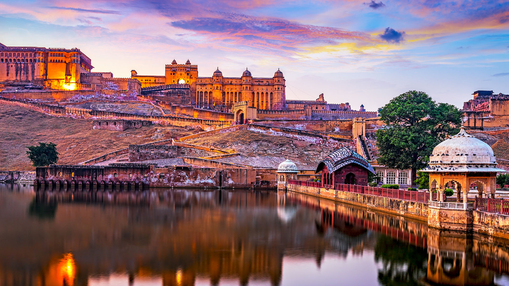
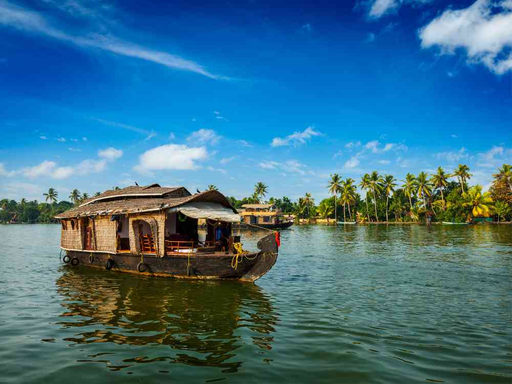

Hidden & Famous Places of India
Agra
The Taj Mahal is one of the Seven Wonders of the World. It was built by Emperor Shah Jahan in memory of his wife Mumtaz Mahal. It is made of white marble and attracts millions of visitors every year.

Jaipur
The Pink City offers a beautiful contrast between majestic, world-famous forts and hidden, architectural wonders tucked away from the main tourist crowds.

Kerala Backwaters
Kerala is famous for its beautiful backwaters, houseboats, and green landscapes. Visitors enjoy boat rides, beaches, and Ayurvedic treatments. It is often called “God's Own Country.”

Goa
Goa is India's most popular beach destination. It is famous for its sandy beaches, nightlife, churches, and Portuguese architecture. Tourists visit Goa for water sports and relaxing holidays.

Amritsar
The Golden Temple, also known as Harmandir Sahib, is the holiest shrine of Sikhism. It is covered with gold and welcomes people of all religions. The free community kitchen (Langar) serves thousands of people every day.

Useful link
Instagram
canva
back to home